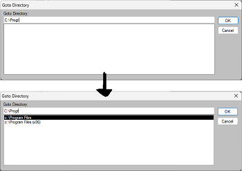
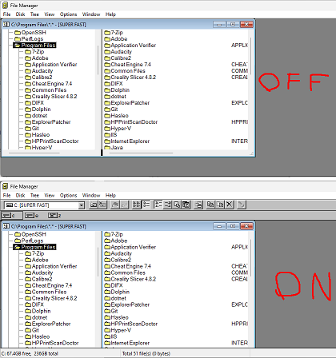
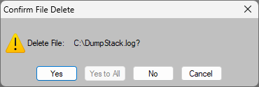
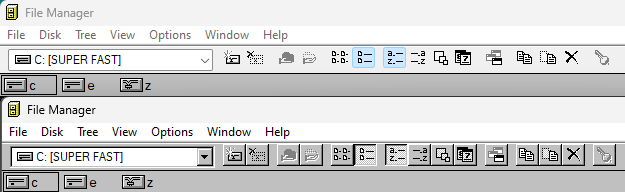
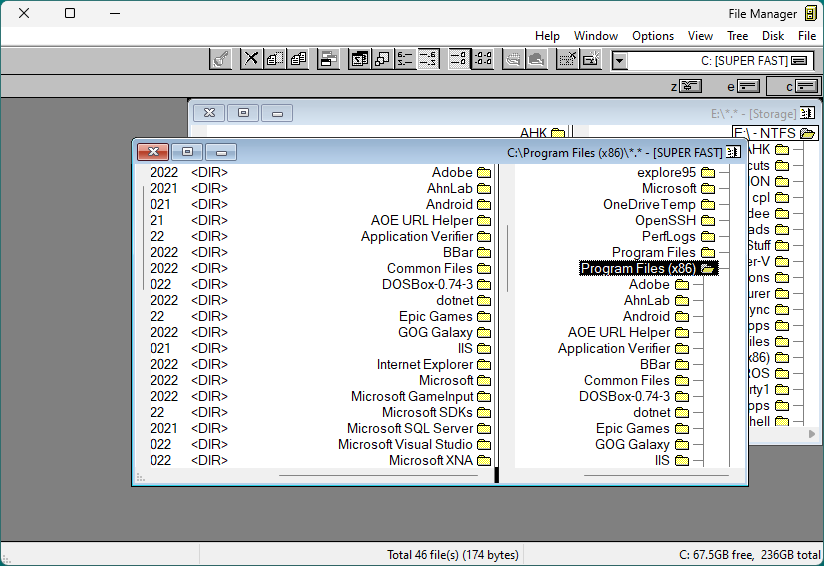
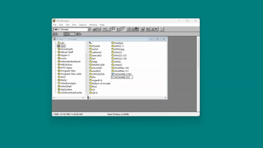

OR: Building WINFILE.INI from scratch is a bad idea. Here's how to do it anyway.
This is not an "issue" per se, and is more of an "I couldn't find this written down anywhere and perhaps somebody else might want to know this for some reason" thing. Feel free to mark it as "solved" or "complete" or whatever, this is purely informational. If you need an issue, somebody could find a way to work this information into the help documentation or whatever.
To be perfectly clear, there is very little practical reason you should ever edit WINFILE.INI directly - nearly everything that is stored in the INI can be directly changed using the user interface, and it's much easier to make these changes in the UI directly. I make this quick reference available simply to satisfy my own sensibilities. If this helps you, great.
At any rate, if you ever need or desire to modify the INI file for fun or profit, here is a list of all of the INI settings I've identified, with best-effort descriptions of what they do. Add them to the help files or whatever. Hopefully, google/bing/whatever will index this and the next person who searches for it will find this.
Also, for anybody following along at home, sprinkled throughout this document are example lines ripped directly from my INI file. You don't have to copy them directly if you don't want to - this is just how I like mine.
The INI file begins with the line [Settings]. It delimits the beginning of the settings portion of the INI file, which just so happens to be the entire file. This line is mandatory: File Manager is pretty lax about the order of each key/setting, however it outright ignores all parameters that are not beneath [Settings] - it has to be the first line of the file.
[Settings]
The first entry of note is Window, which stores the last opened location of the MDI parent window. It features several parameters, not all of which are known to me - if you know what the missing ones are, feel free to share. In order, the parameters are the leftmost pixel location, the topmost pixel location, the width in pixels, the height in pixels, an unknown blank parameter, another unknown blank parameter, and visibility. Set visibility zero to make the program window not display at all even though winfile is running in the background, 1 for normal, 3 for maximized. Technically, I think 2 should have it start minimized, but it doesn't.
Window=123,123,800,600, , ,1
Similarly, Windows File Manager has many child windows, and it will save the location/metrics of these windows on close using entries dir1, dir2, etc. You could edit these entries to change the view options of each window. I do not recommend doing so, as any missing parameters cause file manager to close entirely, and I don't fully understand how each parameter is calculated. The known parameters are: leftmost pixel, topmost pixel, width, height, -1, -1, visible, ?, ?, ?,divider,path. Those three question marks? Those are used for the view options. How exactly those values are calculated are beyond the scope of this document because I don't know myself. As with the parent, so with the child - set visible to 0 for an invisible folder window, 1 for normal display, 2 for minimized, and 3 for maximized. Path must include the file mask you wish to show. For example, C:\*.* shows all files in the C:\ drive. D:\folder\*.exe shows all exe files in the location D:\folder, etc.
dir1=80,52,776,486,-1,-1,1,30,201,135958,247,C:\*.*
dir2=0,0,636,348,-1,-1,1,32,201,24561,193,Z:\*.exe
dir3=120,44,500,300,-1,-1,2,30,201,24561,193,E:\*.*
Most of these are self explanatory. MinOnRun does exactly that, if set to true (1), File Manager minimized itself when a program or file is executed. IndexOnLaunch, when set to 1, causes the Goto Directory index to be created on launch. This is helpful because it means you don't have to remember exactly how things are spelled when using the goto feature.StatusBar, DriveBar, and Toolbar all control whether or not these bars are visible (1) or not (0). Finally, NewWinOnNetConnect determines if a new folder window is opened when you connect to a network drive.

[Figure 1: The Goto directory dialog (Ctrl+G) is shown with indexing disabled and again with it enabled.]

[Figure 2: The primary interface is shown with the toolbar/drivebar/status bar disabled, and again below with aforementioned bars enabled]
MinOnRun=0
IndexOnLaunch=1
StatusBar=1
DriveBar=1
Toolbar=1
NewWinOnNetConnect=1
All of these options are found in the Options > Confirmation dialog, and they are entirely self explanatory. Setting them to 0 unchecks the box and consequently means File Manager does not ask for confirmation. Setting them to 1 checks the box and makes it ask you to confirm. ConfirmDelete asks on file deletion, ConfirmSubDel asks on folder deletion, ConfirmReplace asks when you try to replace an existing file, ConfirmMouse asks when you drag-and-drop a file, ConfirmFormat is supposed to ask when you select to format a drive, but doesn't appear to do so. ConfirmReadOnly asks when you try to modify a System, Hidden, and/or Read-Only file.
ConfirmDelete=1
ConfirmSubDel=1
ConfirmReplace=1
ConfirmMouse=0
ConfirmFormat=1
ConfirmReadOnly=1

[Figure 3: File Manager is asking me to confirm I intended to delete a file. I am prone to accidents, so having it double check my work is always reassuring, especially when you consider that File Manager bypasses the Windows Recycle Bin and directly deletes the file.]
DisableVisualStyles determines if the toolbar uses visual styles (0), or does not (1). If you want that authentic 9x/nt4 feel, set it to 1 for raised buttons. Or leave it at 0 and get the boring, flat buttons.
MirrorContent reverses the left-right order of individual items without reversing text. See attached picture below. I'm not sure if there's an actual practical use for it, or if it's just neat.

[Figure 4: Visual styles are enabled (top) and disabled (bottom). It's altogether a minor change, but if you're using a classic theme on your computer it may tie things together.]

[Figure 5: The File Manager window has been mirrored! Text is still rendered in the correct left-to-right fashion, but menu items and buttons are right-to-left ordered.]
DisableVisualStyles=1
MirrorContent=0
Face sets the font face used by File Manager. Note: it uses the name of the font as shown in the font picker, and not the filename of a font, so the font has to be installed in the system to use. Size sets the font size. These are probably the only two you should mess with.
LowerCase controls whether or not Italic/Oblique fonts are used. Oh, and also makes every thing lowercase. It's pulling double duty. Default value is 0. Add 1 to the value to make FAT formatted drives display in lowercase. Add 8 to the value to make all drives display in lowercase. Add 4 to the value to make the font italic. So, for example, to make the font italic and have FAT drives display lowercase, set the value to 5. Weight sets the font weight used. What values are valid? Depends on the font. For example, in Segoe UI a value of 300 corresponds to light, 350 semilight, 400 regular, 700 semibold. Different fonts have different values. Frankly, I suggest just omitting this property entirely.
Face=Segoe UI
Size=10
LowerCase=0
UILanguage sets the language used by File Manager. At, present, to my knowledge anyways, there are six available language options currently: en-US, zh-CN, he-IL, ja-JP, pl-PL, and de-DE. English (US), Chinese (Simplified), Hebrew, Japanese, Polish, and German.
UILanguage=en-US
EditorPath sets the editor that is executed when the edit command is selected. Contrary to what the name indicates, you might not necessarily need the entire path - if the editor itself is in your path somewhere, you can just put the editor command in alone.
EditorPath=nano

[Figure 6: I have set the default editor to nano. Now, when File Manager is told to edit the the file NOSHARE, the file is automatically opened in the console based text editor nano.]
ScrollOnExpand determines if the directory tree view scrolls automatically when you expand a folder in the tree. The default behavior (1) is that it does scroll automatically putting the directory you expanded at the top of the view. You can disable this behavior by setting the value to 0.
Note: at the time of writing, this behavior is not available in the currently released version. I'm led to believe that the changes necessary have been implemented if you build from source, and it could turn up in a theoretical future release.
ScrollOnExpand = 0